Let's break it down.
Mass Effect is a series of games created by Bioware and produced by EA. The first game was released in 2007, and the last in 2011.
Mass Effect tells the story of Commander Shepard and his quest to save the galaxy from a species of sentient machines called Reapers.
During Shepard's adventures, the player meets countless alien species - some organic, some synthetic.
Many of the characters can serve aboard Shepard's ship, the Normandy, and several of the shipmates can fight along Shepard in planet-side missions.
Non-combat characters
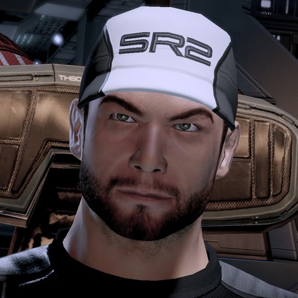
Jeff 'Joker' Moreau
Joker is the pilot of the Normandy. He is known for his superb flying skills and is a premiere pilot. Joker has Vrolik's Syndrome, or 'brittle bone disease'.
Joker earned his nickname in flight school for being a practical joker.
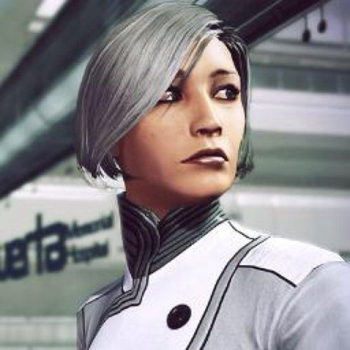
Dr. Karin Chakwas
Dr. Chakwas is the Normandy's medical officer. She is unmarried but considers her life in the Alliance military as a life well-spent.
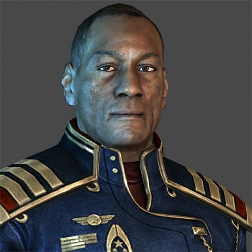
Captain Anderson
Anderson is the former commander of the Normandy. He stepped down to give Shepard command of the Normandy. Anderson is a consistent supporter of Shepard and his crew.
Primary combat characters
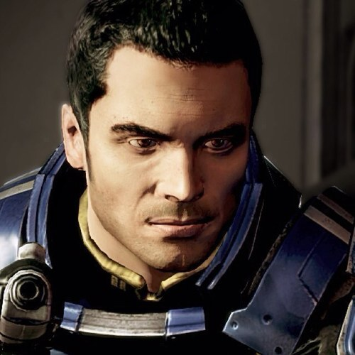
Kaiden Alenko
Kaiden is a human L3 biotic, one of the highest functioning squad members with biotic abilities (read: space magic).
He has an older implant that sometimes causes him problems, but he is able to manage.
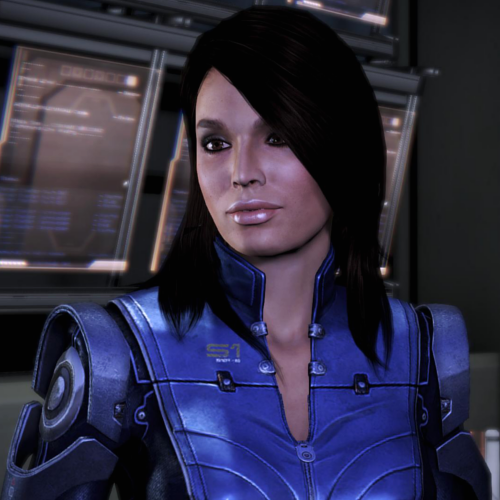
Ashley Williams
Ashley is a hardened human Alliance military soldier who eventually accepts an N7 role in later games.
She takes military life extremely seriously and has a severe distrust and dislike of alien species.
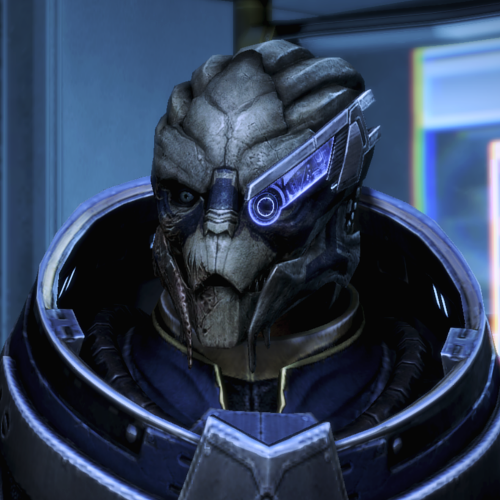
Garrus Vakarian
Garrus is a turian sniper initally met as part of the Citadel's security force.
Garrus is a logical wisecrack and one of the smartest members of the crew of the Normandy.
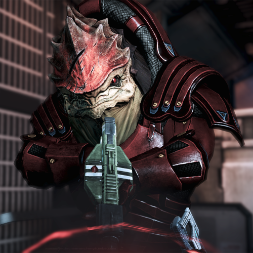
Urdnot Wrex
Wrex is a krogan battlemaster from Tuchanka. He is fiercly loyal to the krogan species, and he takes the cure of the genophage very seriously.
He is a hothead head at times, but wants nothing more than to bust some heads.
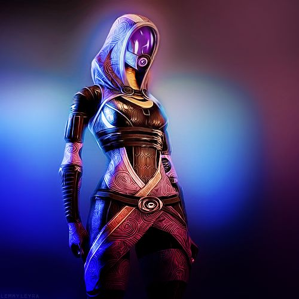
Tali'Zorah nar Raya
Tali is a quarian engineer currently on her mission. She is a mechanical whiz-kid, but very emotional. She is also fiercly loyal to her species,
and she distrusts the geth at all costs.
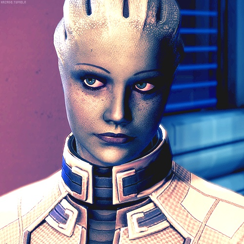
Liara T'Soni
Liara is an asari researcher who has dedicated her life to the study of the Protheans. Liara is very calculated, but still warm.
She eventually takes on the role of the Shadow Broker and deals in secrets across the galaxy.
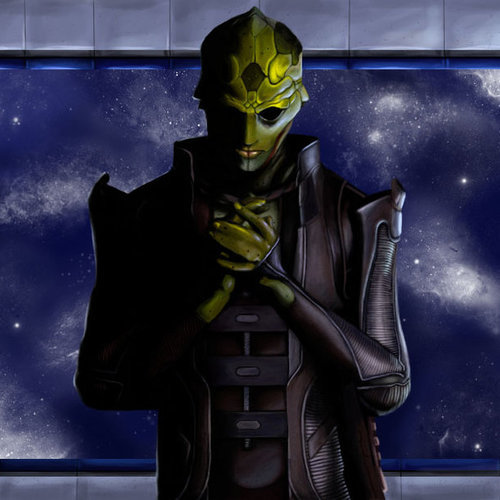
Thane Krios
Thane is a drell assassin and dying from Kepral's syndrome. He is deeply spiritual and consistenly asks for his goddess Kalahira's protection,
but he does not hesitate to also ask for peace for his targets.
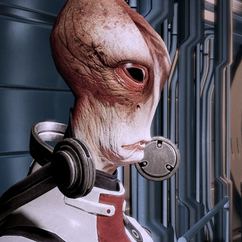
Mordin Solus
Mordin is the very model of a scientist salarian. He's studied species, Turian, Asari, and Batarian.
He's quite good at genetics (as a subset of biology), because he is an expert (which he knows is a tautology).